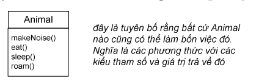

Quan hệ thừa kế trong thiết kế mang lại cho ta rất nhiều điều.
Lợi ích thứ nhất: tránh lặp các đoạn mã bị trùng lặp. Ta có thể loại bỏ được những đoạn mã trùng lặp bằng cách tách ra các hành vi chung của một nhóm các lớp đối tượng và đưa phần mã đó vào một lớp cha. Nhờ đó, khi ta cần sửa nó, ta chỉ cần cập nhật mã ở duy nhất một nơi, và sửa đổi đó có hiệu lực tại tất cả các lớp kế thừa hành vi đó. Công việc gói gọn trong việc sửa và dịch lớp cha. Tóm lại: ta không phải động đến các lớp con!
Lợi ích thứ hai: ta định nghĩa được một giao thức chung cho tập các lớp gắn kết với nhau bởi quan hệ thừa kế. Quan hệ thừa kế cho phép ta đảm bảo rằng tất cả các lớp con của một lớp đều có tất cả các phương thức mà lớp đó có. Đó là một dạng giao thức mà lớp đó tuyên bố với tất cả các phần mã khác rằng: "Tất cả các thể loại con của tôi (nghĩa là các lớp con) đều có thể làm những việc này, với các phương thức trông như thế này...". Nói cách khác, ta thiết lập một hợp đồng (contract).
Lưu ý rằng, khi nói về Animal bất kì, ý ta đang nói về đối tượng Animal hay đối tượng thuộc bất cứ lớp nào có Animal là tổ tiên trong cây phả hệ. Khi ta định nghĩa một kiểu tổng quát (lớp cha) cho một nhóm các lớp, bất cứ lớp con nào trong nhóm đó đều có thể dùng thay cho vị trí của lớp cha. Ta đã có Wolf là một loại con của Animal; một đối tượng Wolf có tất cả các thành viên mà một đối tượng Animal có. Vậy thì lô-gic hiển nhiên: một đối tượng Wolf có thể được coi là thuộc loại Animal; nơi nào dùng được Animal thì cũng dùng được Wolf.
Ta bắt đầu chạm đến phần thú vị nhất của lập trình hướng đối tượng: đa hình.